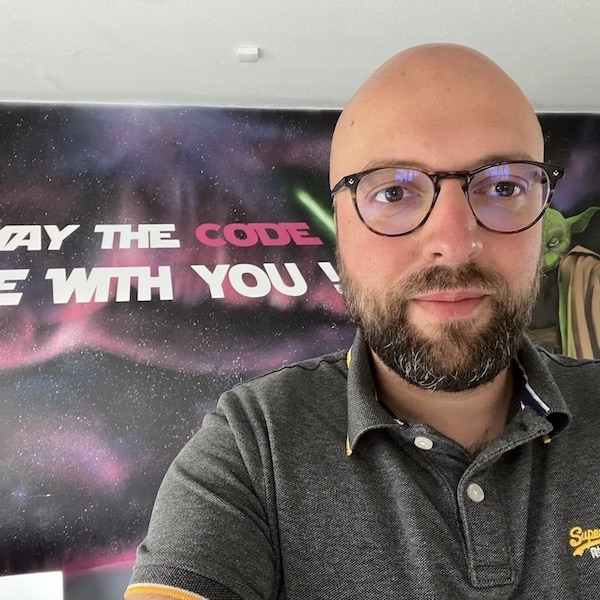
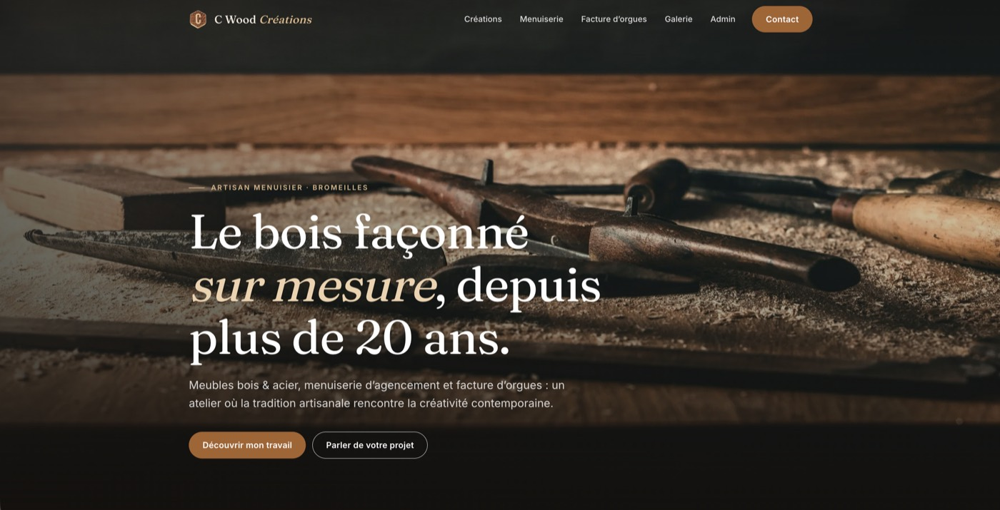
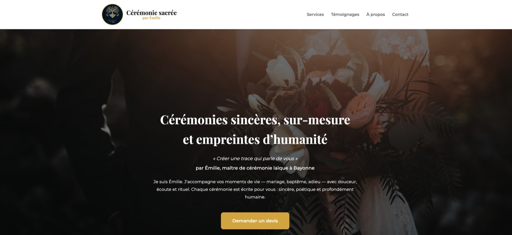
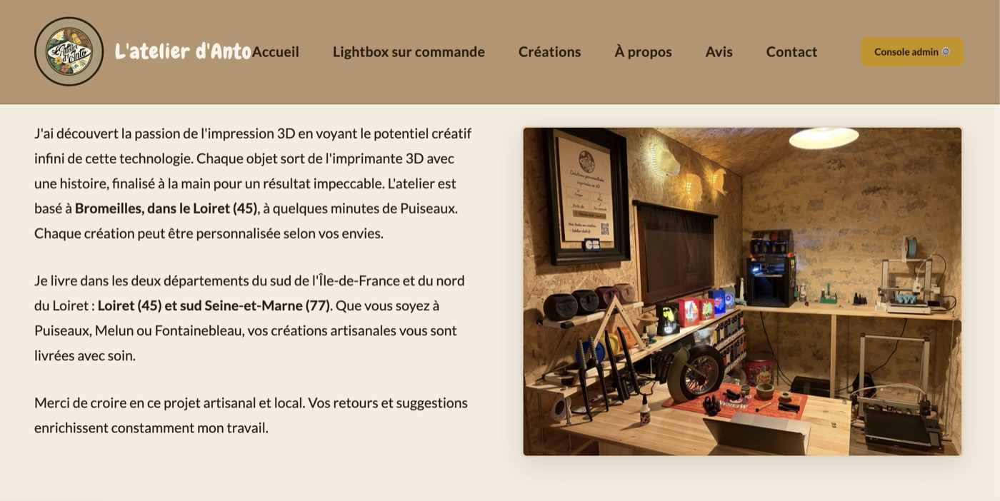
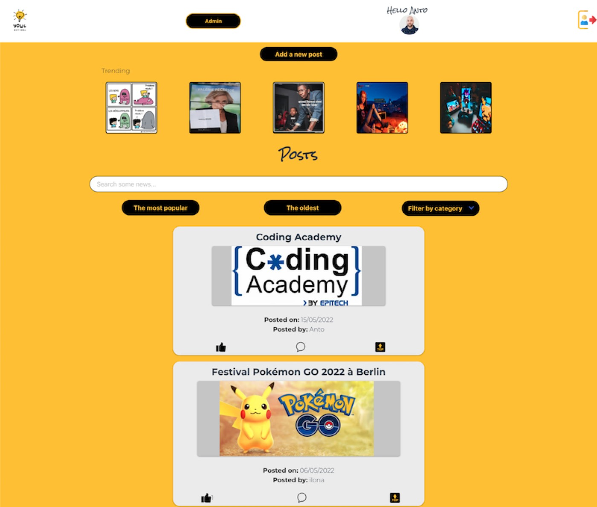
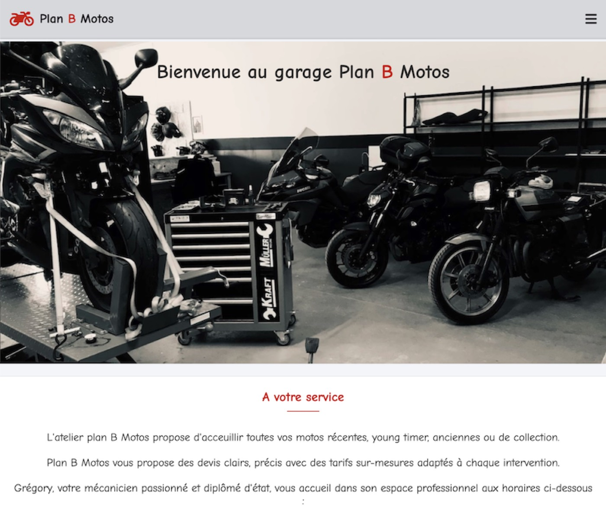
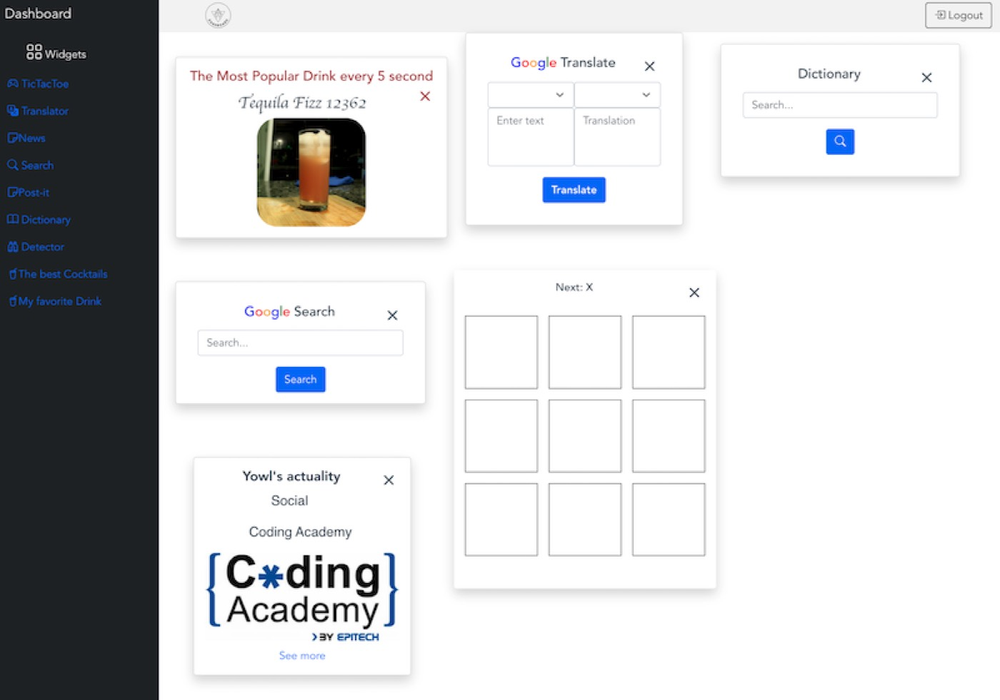
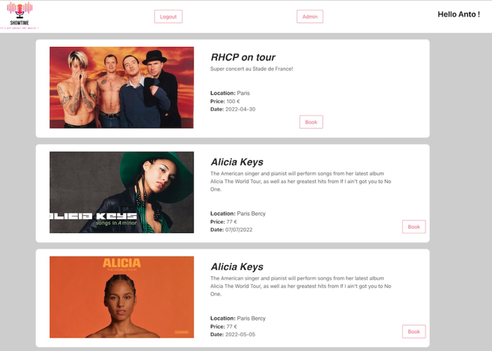
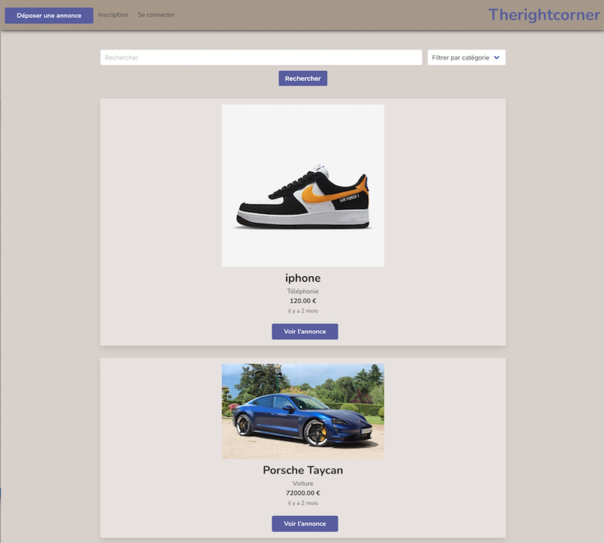

10 à 15
Parcours de tarification
Parcours en ligne qui permettent d'obtenir un tarif et de souscrire un contrat d'assurance auto ou habitation.
Développeur full stack · depuis 2022
Je m'appelle Anthony. Après dix ans dans les télécoms chez SFR, je me suis reconverti au développement à la Coding Academy by Epitech. Aujourd'hui je construis des outils métier chez YZY Digital et des sites sur mesure pour des artisans et indépendants.

Projets
Chez YZY Digital, principalement pour le secteur de l'assurance.
10 à 15
Parcours en ligne qui permettent d'obtenir un tarif et de souscrire un contrat d'assurance auto ou habitation.
5
Sites dédiés à des offres d'assurance proposées sous la marque de partenaires.
En équipe
Participation au développement des espaces client des assurés, au sein de l'équipe projet.
Télécom
Outil métier pour un opérateur télécom : analyse des besoins, développement, formation des utilisateurs et support.
En dehors de mon activité chez YZY Digital, je conçois et développe de A à Z des sites pour des artisans et indépendants : design, intégration, espace d'administration et mise en ligne.

Site d'un artisan menuisier : mobilier bois & acier, menuiserie d'agencement et facture d'orgues. Galerie de réalisations et espace admin.
cwoodcreations.fr
Site d'une maîtresse de cérémonie laïque à Bayonne : présentation des services, témoignages et demande de devis.
ceremoniesacree.fr
Mon atelier d'impression 3D : créations artisanales, lightbox sur commande, avis clients et console d'administration.
latelier-danto.frRéalisés en équipe pendant la Coding Academy by Epitech.

Réseau social d'actualités : publications, tendances, recherche, filtres et espace admin.

Site vitrine pour un garage moto : services, horaires et présentation de l'atelier.

Tableau de bord à widgets connectés à des API : traduction, dictionnaire, recherche, actus.

Billetterie de concerts : catalogue d'événements, réservation et administration.

Site de petites annonces : dépôt d'annonce, comptes utilisateurs, recherche par catégorie.
Parcours
Dix ans au contact des clients et des réseaux m'ont appris la rigueur, l'écoute et le sens du service. Je les mets aujourd'hui au service du code.
Développeur web full stack, Bac+2 (RNCP 5). Projets en équipe, validés par un stage de 6 mois.
Suivi de la qualité de service, indicateurs, plans d'action, animation des comités d'exploitation et formation des clients.
Du support niveau 1 au suivi dédié de flottes entreprises : incidents réseau, référent technique en back office.
Compétences
Contact
Site vitrine, outil métier ou renfort sur une équipe : écrivez-moi, je réponds rapidement.